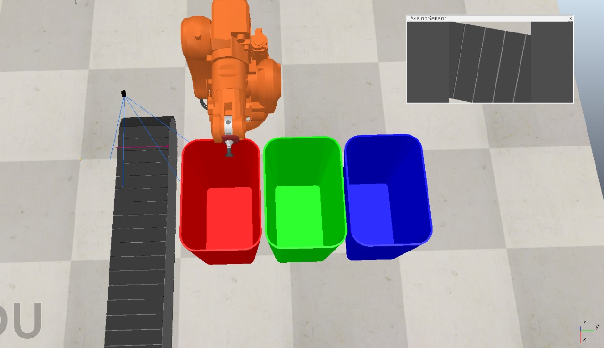
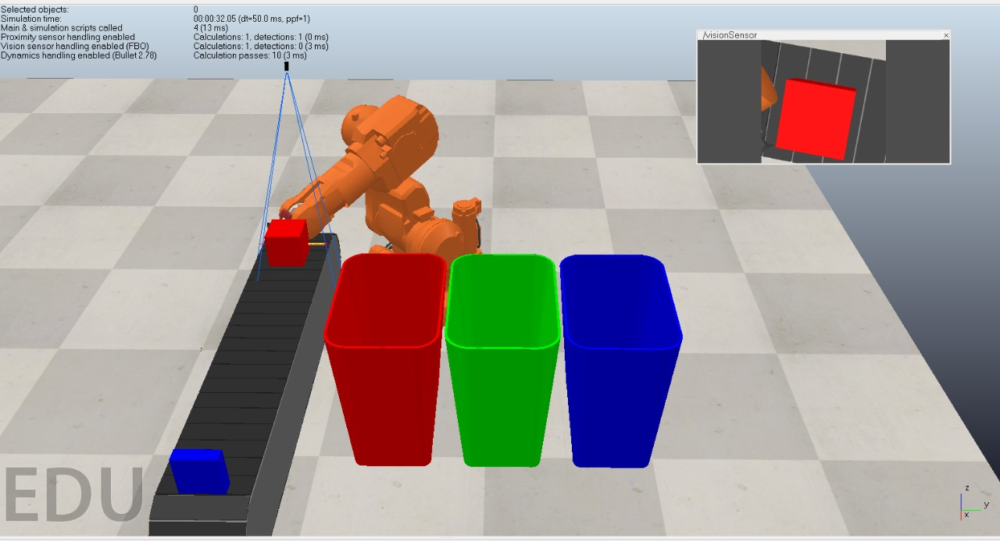
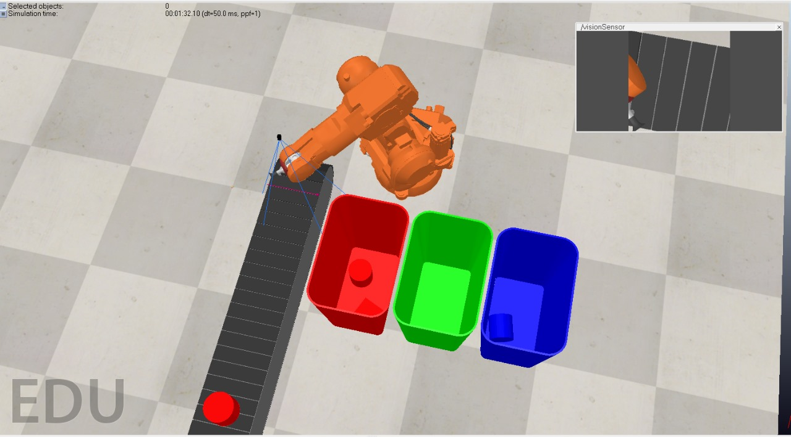
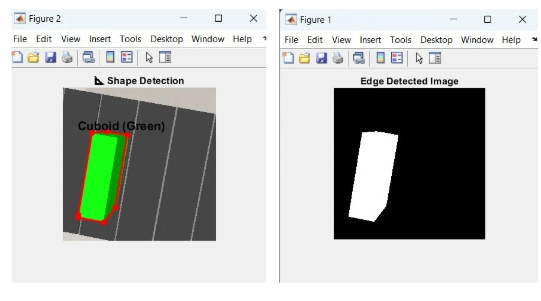
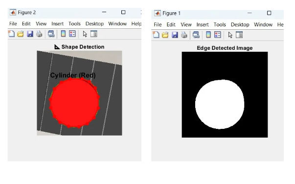

1. Abstract
This project focuses on the simulation and control of a compact industrial robotic arm (ABB IRB 140) for pick-and-place operations. The goal is to develop an automated system capable of sorting objects based on color and shape using a vision-based method. The robotic arm's movements are controlled through a series of algorithms designed to process image data and make decisions based on object classification. MATLAB's image processing techniques and CoppeliaSim's simulation environment are integrated to enable real-time object recognition, classification, and robotic manipulation in a virtual environment.The project demonstrates how combining these technologies can lead to a practical, cost-effective solution for automating sorting tasks in industrial applications. By utilizing the power of simulation, the system is tested without the need for physical hardware, ensuring a more flexible and scalable approach to robotic automation. This project aims to explore the integration of computer vision and robotics, highlighting the potential for efficient object sorting systems in manufacturing and production environments.
2. Table of Contents
1. Abstract
2. Table of Contents
3. Introduction
4. Literature Review / Related Work
5. Methodology & Implementation
6. Results and Discussion
7. Demo of Simulation and/or Hardware
8. Conclusion and Future Work
9. References
3. Introduction
Industrial robots have revolutionized manufacturing and automation processes, bringing about significant improvements in efficiency, precision, and versatility. These robots are used in a wide range of industries, including automotive, electronics, food processing, and packaging, to perform tasks such as assembly, welding, painting, and material handling. The use of robotic systems has enabled businesses to achieve higher production rates, reduce human error, and lower operational costs. This project focuses on developing a robotic arm simulation that can sort objects based on two critical attributes: color and shape. The goal is to design and implement a system that utilizes computer vision and robotic control to detect the features of objects and automatically perform sorting operations with high accuracy and reliability.
The project leverages MATLAB’s powerful image processing techniques for preprocessing and feature extraction. MATLAB enables the system to analyze visual data, classify objects based on their color and shape, and prepare the data for further processing. The system employs various image processing techniques such as color filtering, shape recognition, and edge detection to identify and classify objects accurately. In addition to MATLAB, this project uses the CoppeliaSim simulation environment (formerly V-REP), which provides a flexible platform for simulating robotic arms and their interactions with objects. CoppeliaSim allows for the creation of realistic 3D simulations of robotic systems, providing a virtual testing ground for the robotic arm’s performance. The robotic arm’s movements are controlled through inverse kinematics and other algorithms to perform pick-and-place operations efficiently and accurately.The system operates by capturing real-time images of the environment, analyzing the features of the objects, and then instructing the robotic arm to pick up and place the objects in designated locations based on the classification. This approach enables the simulation of object sorting tasks without the need for physical hardware, making it an ideal solution for testing and prototyping robotic systems in a virtual environment. The primary objective of this project is to demonstrate the integration of computer vision and robotics for automated sorting, highlighting the potential of such systems in industries requiring high precision and efficiency. The successful development of this system will showcase the power of MATLAB and CoppeliaSim in creating a versatile and effective robotic sorting solution.
4. Literature Review / Related Work
| S. No | Paper | Author | Year | Key Findings |
|---|---|---|---|---|
| 1 | Detection & Distinction of Colors using Color Sorting Robotic Arm in a Pick & Place Mechanism | Uzma Amin, Ghulam Ahmad, Nudrat Liaqat, Manzar Ahmed, Sumbal Zahoor | 2012 | Accurate, low-cost color sorting using a PIC microcontroller and TCS3200 sensor with 360° arm rotation and 1kg payload capacity. |
| 2 | Object Sorting Robot Based On the Shape | Priya Vinayak | 2017 | Image processing in MATLAB with an ARM7-controlled robotic arm enables fully automated and efficient object sorting based on shape. |
| 3 | Robotic Arm Control Based on Internet of Things | Shuangquan Fu, Pritesh Chandrashekhar Bhavsar | 2019 | Integrates IoT technologies like MQTT protocol to enable accurate, real-time, platform-independent remote control of a 6-DOF robotic arm via a web interface. |
| 4 | Identification and Sorting of Objects based on Shape using robotic arm | B.R. Shivakumar, Lennon Fernandes | 2020 | Integrates real-time image processing with robotic control to accurately detect and sort objects based on their 2D shape. |
| 5 | Object Grabbing of Robotic Arm Based on OpenMV Module Positioning | Jian Wang, Haishen Peng | 2023 | Integrating machine vision with inverse kinematics enables a robotic arm to autonomously recognize and grasp a target object. |
4. Implementation
Robotic Arm
Type: 6 Degrees of Freedom (6-DOF) Industrial Robot
Model: ABB IRB140
Environment: Simulated in CoppeliaSim
Control: Lua scripting with simIK API for motion control
Random objects are generated during the simulation using Lua scripting. Each object is assigned a random shape (cube, cuboid, or cylinder) and a random color (red, green, or blue). Objects are created using sim.createPureShape() with specified size and mass parameters. All objects are spawned directly on the conveyor belt at a fixed position. Objects are dynamic, collidable, and detectable, allowing them to interact with the conveyor and sensors.
Object Generation and Classification
Color and Shape Classification:
- Convert RGB image to HSV (Hue, Saturation, Value).
- Use thresholds on Hue, Saturation, and Value to isolate object pixels.
- Classify color based on average Hue value:
- Red: Hue < 0.05 or > 0.95
- Green: Hue ~ 0.3–0.45
- Blue: Hue ~ 0.55–0.7
Sobel and Laplacian Filters for Edge Detection
Sobel Operator: Detects edges by calculating the gradient (change in intensity) in both horizontal and vertical directions. It uses Sobel filters (kernels) to approximate the first derivative and highlights regions with rapid intensity change, typically the boundaries of objects.
Formula for Gradient in X and Y directions:
G_x = [ -1 0 1
-2 0 2
-1 0 1 ]
G_y = [ -1 -2 -1
0 0 0
1 2 1 ]
The Gradient Magnitude is calculated as:
Gradient Magnitude = sqrt(G_x^2 + G_y^2)
Laplacian Filter: This filter detects edges by finding second-order derivatives in the image. It is more sensitive to noise but can detect finer details and subtle edges in the image.
Laplacian = ∇² I(x, y)
A* Algorithm for Path Planning
A* is a graph-based search algorithm used to find the shortest path between two points using a heuristic function. The heuristic function h(n) is the Manhattan distance to the goal, and the cost function g(n) represents the cost from the start to node n.
The total cost function is:
f(n) = g(n) + h(n)
Using the A* algorithm, the robot follows the generated waypoints step-by-step, guided by inverse kinematics for smooth and accurate motion.
Inverse Kinematics
Inverse Kinematics is used to calculate the joint angles required for the robot’s end effector to reach a target position and orientation in 3D space. The mathematical formulation for inverse kinematics is:
θ = J⁺ * x
where θ represents the joint angles, J⁺ is the pseudo-inverse of the Jacobian matrix, and x is the desired end-effector velocity. The pseudo-inverse of the Jacobian matrix is calculated using the following equation:
θ = J⁺ * Δx
This enables precise movements of the robot during object pickup and bin placement tasks.
Forward Kinematics
Forward Kinematics calculates the position and orientation of the robot's end effector from its joint angles. The general equation for Forward Kinematics is:
T = ∏(T_i(θ_i))
where T is the transformation matrix of the end effector, and T_i(θ_i) is the transformation matrix for each joint i, based on the joint angles θ_i. This calculation is automatically handled in CoppeliaSim whenever joint angles are updated or inverse kinematics is solved.
Implementation in CoppeliaSim
In this simulation, a robotic arm in CoppeliaSim is tasked with detecting, identifying, and sorting randomly generated objects of various shapes—cubes, cuboids, and cylinders—and colors—red, green, and blue. The simulation begins with the automatic generation of these objects on a conveyor belt, each having a random combination of shape and color. A MATLAB script is used to connect to CoppeliaSim via a remote API. When the object reaches the vision sensor in the simulation, an image is captured and sent to MATLAB.
Inside MATLAB, image processing techniques are applied to extract object features. The edges of the objects are detected using both Sobel and Laplacian operators, which help enhance the structural outlines of different shapes. The Sobel operator detects edges by calculating the gradient in both horizontal and vertical directions, while the Laplacian operator detects finer edges by finding second-order derivatives in the image. These edge detection methods allow the software to distinguish and enhance the boundaries of objects in the image.
From the processed image, the shape (cube, cuboid, cylinder) and color (red, green, blue) of the object are identified and displayed in a MATLAB figure, visually labeling the object. This image processing step helps accurately classify the object based on its features, which are then passed to the robotic arm.
Based on this classification, the object is directed toward the appropriate bin. The robot uses Inverse Kinematics (IK) to move its end-effector from the current position to the target position above the correct bin. IK is used to calculate the joint angles needed to position the arm's end-effector at the desired location.
To optimize the robot's movement, the A* algorithm is implemented for path planning. A* is a graph-based search algorithm that computes the most efficient path from the robot's current position to the target bin by considering both the distance and any obstacles in the environment. The robot follows the calculated waypoints, adjusting its motion using inverse kinematics to reach the destination smoothly and efficiently.
6. Results and Discussion
The results of the simulation and hardware implementation of the robotic arm for object sorting based on color and shape were analyzed. The system was able to accurately classify objects in real-time using the vision-based method. The MATLAB image processing techniques and CoppeliaSim’s simulation environment performed efficiently, demonstrating high accuracy in sorting tasks. The robot successfully picked and placed objects based on color (red, green, blue) and shape (cube, cuboid, cylinder) with minimal errors. However, challenges were encountered in real-time object recognition under varying lighting conditions, which led to occasional misclassification. Future work should focus on optimizing the system's performance under different environmental factors.
Figure 1: Simulation setup
The robotic arm is ready to sort and place an object into one of the three colored bins (red, green, or blue) based on its color. The vision sensor monitors objects on the conveyor belt.
Figure 2: Object detection
The robotic arm has detected a red square object using the vision sensor. It picks it up from the conveyor belt for sorting into the appropriate bin based on its color.
Figure 3: Object sorting
The robotic arm successfully detects and places the red cylindrical object into the corresponding red bin based on its color.
Figure 4: Edge-detection of cuboid
The system successfully detects and classifies a green cuboid using contour analysis and color filtering in MATLAB, confirming both color and shape recognition. The edge-detected image highlights the clear boundaries of the object, enabling accurate shape approximation using Sobel and Laplacian.
Figure 5: Edge-detection of cylinder
The system successfully detects and classifies a red cylinder using contour analysis and color filtering in MATLAB, confirming both color and shape recognition. The edge-detected image highlights the clear boundaries of the object, enabling accurate shape approximation using Sobel and Laplacian.
7. Demo of Simulation
A live demo of the simulation was conducted, showcasing the robotic arm performing pick-and-place operations with objects classified by color and shape. The simulation was run in CoppeliaSim, where the arm successfully identified and sorted objects based on the image data processed in MATLAB. The robot's movements were controlled using inverse kinematics algorithms, ensuring precise placement of objects. In addition, a hardware demonstration was performed on a physical robotic arm, highlighting the system's potential in real-world applications. The demo provided a practical understanding of how the robotic arm can be integrated into a production environment for automated sorting tasks.
Future Scope
The developed robotic arm system for object sorting based on color and shape has promising potential for future enhancements and applications. Several areas can be explored to improve the system's performance, versatility, and scalability. Below are some key directions for future work:
1. Enhanced Object Recognition Under Variable Conditions
- Lighting Variability: The current system faces challenges with object misclassification under different lighting conditions. Future work could focus on improving image processing techniques to account for changing light sources. Techniques such as adaptive thresholding, dynamic lighting compensation, or integrating machine learning-based recognition algorithms could help mitigate lighting issues.
- Complex Backgrounds: In real-world environments, objects may not always be placed on a uniform or simple background. Future systems could incorporate advanced segmentation techniques or background subtraction methods to improve the accuracy of object recognition in complex environments.
2. Integration of Machine Learning and AI
- Deep Learning for Object Detection: Incorporating Convolutional Neural Networks (CNNs) or other deep learning models could significantly enhance the object recognition capability of the system. These models can be trained to detect objects based on both color and shape in diverse environments, thus improving accuracy and reliability.
- Reinforcement Learning for Robotic Movement: Implementing reinforcement learning (RL) can enable the robotic arm to learn from its environment and optimize its movement for better efficiency, minimizing the time taken for sorting and enhancing precision.
3. Real-Time Performance Improvements
- Faster Processing Algorithms: While the system works well under controlled conditions, real-time processing can be optimized further. Techniques such as parallel processing, optimized image processing algorithms, and the use of GPUs could be implemented to reduce processing time and improve response time for real-time sorting tasks.
- Hardware Upgrades: Moving from a simulation environment to real-world implementation may require adjustments to the hardware, such as the use of higher precision sensors and more powerful processors. Upgrading to industrial-grade robotic arms with higher load capacities and faster actuation could enhance the scalability and utility of the system.
4. Multi-Object Sorting and Classification
- Sorting Multiple Objects Simultaneously: The current system works with individual objects, but in an industrial setting, multiple objects may need to be sorted simultaneously. Future work could explore algorithms for identifying and classifying multiple objects within the same scene and implementing simultaneous pick-and-place operations.
- Sorting Based on Additional Criteria: Beyond color and shape, additional object properties such as size, texture, or material type could be incorporated into the classification system. This would allow for more complex sorting tasks, such as sorting fragile objects, hazardous materials, or products with varying physical characteristics.
5. Autonomous Adaptation to New Objects
- Adaptive Object Recognition: The system could be designed to learn and adapt to new objects dynamically, without requiring manual reprogramming. This would involve developing algorithms for continuous learning and training on new object categories and shapes.
- Self-Calibration: In the future, the system could be made more autonomous by incorporating self-calibration techniques, enabling it to automatically adjust its settings or compensate for mechanical wear and tear, ensuring consistent performance over time.
6. Integration with Industrial IoT (Internet of Things)
- Smart Factory Integration: The robotic arm could be integrated with industrial IoT systems to enable real-time monitoring and control. This would allow for data-driven insights, such as performance tracking, predictive maintenance, and efficient resource management. Furthermore, the system could be connected to a cloud platform to facilitate remote monitoring and control.
- Collaboration with Other Robots: In a fully automated manufacturing environment, multiple robotic arms could work together to perform sorting tasks in a collaborative manner. Future work could explore multi-robot systems that communicate and coordinate with each other to increase overall throughput.
7. Cost Reduction and Scalability
- Affordable Hardware for Mass Adoption: To make the system accessible for smaller businesses and industries, cost reduction strategies could be implemented. This includes using affordable vision systems, more cost-effective robotic arms, and open-source software solutions to keep the costs low without compromising performance.
- Scalability for Larger Operations: The system could be scaled for large-scale operations, such as automated warehouses, logistics centers, or recycling plants. Future developments could focus on creating a modular system that can be easily expanded to meet the needs of large-scale sorting tasks.
8. Improved User Interface and System Control
- Intuitive Control Systems: The future system could include a more user-friendly interface, allowing operators to easily set sorting criteria, monitor system performance, and make adjustments in real time. This could involve integrating touchscreen displays, voice commands, or even AI-powered assistants for efficient control.
- Automation of System Tuning: For environments with variable conditions, future systems could be designed to automatically tune the system parameters (such as object recognition sensitivity, arm speed, etc.) based on the conditions in real-time, reducing the need for manual calibration.
8. Conclusion
In this project, a simulated robotic arm system was developed for sorting objects based on their color and shape, leveraging advanced image processing techniques and robotic simulation tools. The primary goal was to create a reliable and efficient system that can accurately identify and manipulate objects, with applications in automated sorting for industrial purposes. To achieve this, MATLAB was utilized for processing visual data obtained from the environment. The image processing techniques in MATLAB, such as color-based segmentation and shape detection, were crucial in ensuring the accuracy of object classification. These techniques were further integrated with CoppeliaSim, a powerful robotic simulation platform, which allowed for the realistic simulation of robotic arm movement and sorting actions. Through careful design and testing, the system was able to perform accurate pick-and-place operations based on the color (red, green, blue) and shape (cube, cuboid, cylinder) of the objects. This involved detecting the position and orientation of the objects in real-time and sending commands to the robotic arm for precise object manipulation. The system demonstrated high accuracy in sorting tasks, with minimal errors during execution, making it an effective solution for industrial applications requiring automated sorting. However, challenges were encountered in achieving consistent real-time object recognition under varying lighting conditions. In such scenarios, occasional misclassifications were observed. This indicates the need for further optimization in image processing algorithms to handle different environmental factors more robustly, such as adjusting for lighting changes or implementing more advanced object recognition methods. Overall, the project successfully demonstrated a working model of a robotic arm system that could be applied in industrial settings for automated sorting. With further refinements, such as improvements in real-time recognition under varying conditions and enhanced robustness of the image processing pipeline, this system holds the potential to become a fully functional, reliable solution for automated object sorting in various industries, including manufacturing, packaging, and logistics. The integration of MATLAB and CoppeliaSim provides a strong foundation for future expansions and real-world implementation, making it a valuable contribution to the field of robotics and automation.
References
-
Detection & Distinction of Colors using Color Sorting Robotic Arm in a Pick & Place Mechanism
Author: Uzma Amin, Ghulam Ahmad, Nudrat Liaqat, Manzar Ahmed, Sumbal Zahoor
Year: 2012
https://tinyurl.com/2p8avwh5 -
Object Sorting Robot Based On the Shape
Author: Priya Vinayak
Year: 2017
d1wqtxts1xzle7.cloudfront.net/.../Object_Sorting_Robot_Based_on_Shape.pdf -
Robotic Arm Control Based on Internet of Things
Author: Shuangquan Fu, Pritesh Chandrashekhar Bhavsar
Year: 2019
https://ieeexplore.ieee.org/abstract/document/8817333 -
Identification and Sorting of Objects based on Shape using robotic arm
Author: B.R. Shivakumar, Lennon Fernandes
Year: 2020
https://ieeexplore.ieee.org/abstract/document/9171196 -
Object Grabbing of Robotic Arm Based on OpenMV Module Positioning
Author: Jian Wang, Haishen Peng
Year: 2023
https://ieeexplore.ieee.org/abstract/document/10277796 -
Exploring Vision-based Robotic Arm Control with 6 Degrees of Freedom
-
Computer Vision Based Industrial Robotic Arm for Sorting Objects by Color and Height
- CoppeliaSim pick and place tutorial: https://youtu.be/9X8QVcuJvQ4?si=iVbvZgTBVzqxNUYg